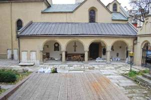

Львівська опера
Опера є однією з найбільш архітектурно виразних пам'яток Львова. Її витончене спорудження дивує жителів і гостей міста неймовірної розкішшю і досконалістю. Тут часто проходять оперети, опери та інші прем'єри.
Театр опери та балету, який місцеві жителі називають головним символом і перлиною Львова, поряд з віденською та одеською операми входить до числа найкрасивіших театрів Європи. Львівська опера, яка прикрашає головний проспект міста, є однією з найяскравіших міських визначних пам'яток, обов'язкових до відвідування. Щодня її красою і величчю захоплюються тисячі мандрівників з різних куточків світу.
Необхідність у великому міському театрі Львів, який перебував у той час під владою Австро-Угорщини, відчув наприкінці XIX сторіччя.
Тоді ж був організований конкурс на кращий проект майбутнього театру, в якому переміг талановитий архітектор Зигмунд Горголевський, що вже встиг прославитися як автор кількох монументальних споруд в Німеччині та Польщі.
Будівництво театру почалося в 1897 році і тривало три роки - в 1900-м Великий міський театр, як тоді називалася опера, був урочисто відкритий. Будівля, виконана в класичних традиціях з елементами зухвалого бароко і стриманого ренесансу, вражала ефектністю і пишністю декору: над його дизайном і обробкою театру працювали кращі майстри Львова і всього Старого Світу.
Фасад будівлі щедро прикрашений скульптурами, колонами, нішами і балюстрадами. Вінчають його три крилаті бронзові фігури - Генія драми і комедії, Генія музики і Слави з золотою пальмовою гілкою в руках.
У 2000 році - до сторіччя Львівської опери - вона була відреставрована і перейменована на честь Соломії Крушельницької, видатної української оперної співачки, широко відомої в усьому світі. Побувати в Львівському театрі опери та балету потрібно не тільки на виставі, сюди обов'язково варто прийти з екскурсією - щоб більше дізнатися про історію та легенди цього дивного архітектурного пам'ятника.

Вірменська церква
Вірменська церква - своєрідний вірменський комплекс, до складу якого входить величний собор, чудовий монастир, банк і палац.
Його будівництво тривало у 1363 – 1370 р. на кошти багатих купців – Якова з Кафи (Феодосії) та Паноса з Гайцараца. Архітектором цього собору був Доринг. Коріння історії церкви йдуть в 14 столітті - за часів проживання у Львові вірменської громади. Примітний храм унікальною архітектурою, витонченими фресками і барельєфами. На подвір'ї визначного львівського місця проводилися зйомки знаменитого фіьма "Три мушкетери". Сам собор неодноразово перебудовувався: в 1437 році навколо нього зведено відкриту арочну галерею, перероблену на північному фасаді в захристію (1671), а згодом в ризницю (1731). В 1630 році прибудовано прямокутний західний неф.
Після пожежі 1712 року інтер’єр набуває барокового характеру: тинькуються стіни, встановлюються нові вівтарі. Під час реставрації 1908—1927 років, що здійснювалася під керівництвом архітектора Ф. Менчинського, замість розібраних житлових будинків з боку вул Краківської розпочато будівництво західної вхідної частини, а стіни апсид декоровано стилізованими елементами, запозиченої з давньовірменської архітектури, — накладними арками та орнаментами.

В радянський час Вірменський собор був закритий. Спочатку тут знаходилося фондосховище Львівської картинної галереї, а з 1953 року — музею імені Леніна. В січні 2000 року церкву повернули вірменській громаді. 6 січня 2001 року було звершено перше богослужіння, а 28 травня 2003 року собор освятив католикос всіх вірмен Гагерін ІІ.
Міська ратуша
Ратуша - затишна частина старовинної Австрії, на яку варто подивитися у Львові.
Споруда була зведена за часів, коли Львів вважався столицею Галичини і носив назву Лемберг. Обов'язково підніміться на гору ратуші по чотирьом сотням сходів: тут ви насолодитеся чудовим видом на старовинне місто, собори і витончені будівлійі інші визначні пам'ятки Львова. Невелика плата стягується тільки за вхід на оглядовий майданчик.
Львівська ратуша — адміністративний будинок у центральній частині Львова, який протягом всього часу свого існування був місцем перебування центральної міської влади Львова. Сьогодні є резиденцією Львівської міської ради. В 1827-1835 за проектом складу архітекторів (А. Вондрашка, Й. Маркля, Ф. Третера, Ю. Глоговського) була збудована на місці заваленої в 1826р ратуші нова.
Після пожежі 1848р ратушу було реконструйовано і надано їй сучасного вигляду. В новій ратуші 156 кімнат та 9 залів. Висота вежі складає 65м. З самого верху відкривається весь центр міста, наче на долоні. В 1852г. на ратуші був встановлений годинник. Діаметр циферблата 3м., довжина великої стрілки 2 м 15см. До годинника ведуть 400 сходинок. наступниці встановили годинник, пізніше їх оснастили мелодійним боєм. Третя, ренесансна, львівська ратуша була побудована за проектом вроцлавського архітектора Андрія Бемера на кошти тодішнього олігарха, львівського бургомістра Мартіна Кампіана в 1619 році.
На шпилі Львівської ратуші встановили флюгер у вигляді герба Львова — Лева, а також орла та кулі — символів польської держави. Під час сильної бурі 9 липня 1672 року флюгер зірвався вниз, причому лев затримався на даху ратуші і впав головою на схід, а куля впала на бруківку і розплющилась. Це було сприйнято як прогноз, що вказує на невелику небезпеку для міста і велику для Речі Посполитої. І дійсно, восени цього ж року величезна турецька армія, не без допомоги гетьмана Петра Дорошенка, оточила Львів. Місто ворогові захопити не вдалося, а найбільше в цій війні постраждала Польща. Як би в подяку за незайманість міста лева позолотили.
Другий раз флюгер зірвався в 1704 році, перед самим загарбанням Львова шведським королем Карлом XII. Місто, яке протягом майже чотирьох століть не дозволяло жодному загарбникові ступити на свою бруківку, було завойоване передовою європейською армією. З цього часу почався найглибший занепад в історії Львова. Львівська ратуша — свідок багатьох історичних подій. У середньовіччя перед нею стояв стовп покарання. В 1564 році тут був страчений молдавський господар Томша, а в 1578 — провідник козацько-селянського повстання Іван Підкова. Існує легенда пов’язана з судом та ратушею: “Колись давно містився в ратуші суд. і от рівно опівночі почав з’являтися привід чорної труни, рухався він по сходах, по залах, лякав він сторожу. Сталося так через те, що судді засудили невинного на смерть, а щоб судді були розбірливими на папці, де містилися судові рішення. було написано "пам’ятай про труну"”.
Аптека-музей
Серед будівель в старовинних кварталах Львова, що оточують площу Ринок, є кутовий будинок, яким починаються вулиці Друкарська та Ставропігійська, який виділяється оформленням фасаду першого поверху.
По обидві сторони акуратного порталу розташовано рельєфні портрети відомих персонажів давньогрецької міфології — бога лікування Асклепія (Ескулапа) та його доньки — богині здоров'я Гігієни. Над масивним контрфорсом, виступаючим на тротуар, звисає кована вивіска з емблемою медицини (змія, що обвиває чашу) і датою — 1735, під нею на ланцюжках звисає напис «Аптека-музей».
Відома також під іншою назвою, що пройшла крізь віки — «Під чорним орлом», аптека є однією з найстаріших не тільки у Львові, а й в Україні. Аптека-музей у Львові була заснована в 1795 році і з тих пір вона не припиняла свою діяльність, продаючи лікарські препарати власного виробництва. Вона являє собою унікальну історичну пам'ятку. Наразі тут вже не виготовляють ліки, проте придбати їх легко і доступно кожному. У музеї на вас чекають зали з аптекарським начинням: оригінально упакованими скляночками, вагами, лабораторними інструментами.